Using iFlow to Visualize and Animate Data
By Charles Xie ✉
Listen to a podcast about this article
Whether you are interested in scientific computing or data science, iFlow provides nearly all types of tools for visualizing and animating data. You can either create data using iFlow's mathematical ability, or import data from an external file using a data block, or manually type or copy data using an array input block. Because iFlow is also a general-purpose computing environment, your data visualizations do not need to be only static — you can also animate them using iFlow's programming ability. Because of this ability, you can also process or analyze the data before visualizing them.
Line Plot
Line plots are probably the most common graph for visualizing data. The following example shows that you can import CSV data using a data block to show the low and high temperatures in Massachusetts and Florida. You can even use an operator block to calculate their differences and show them in another line plot (which, not surprisingly, reveals that the largest difference in temperature between the two states occurs in the winter).
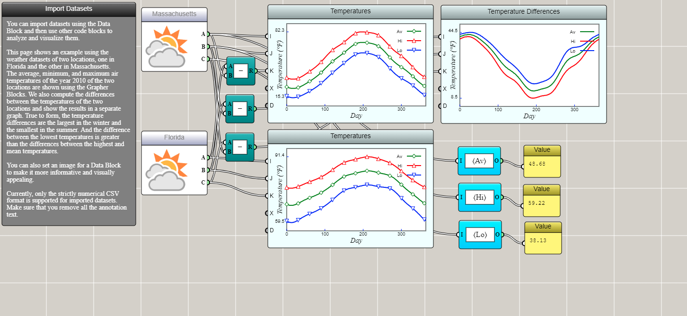
Click HERE to play with the line plot example
Line plots in iFlow can be made interactive and animated, as demonstrated by the following example.
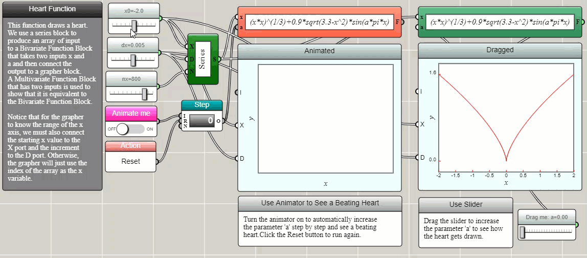
Click HERE to play with the line plot example
Scatter Plot
A scatter plot is often used to display values of two or three variables as points in a Cartesian coordinate system. A line plot can be turned into a scatter plot if we choose to draw only symbols and do not connect them with line segments. For dynamically generated data sets, a Space2D or Space3D block can be used to create a 2D or 3D dynamic scatter plot, as shown in the following examples about the normal distribution.
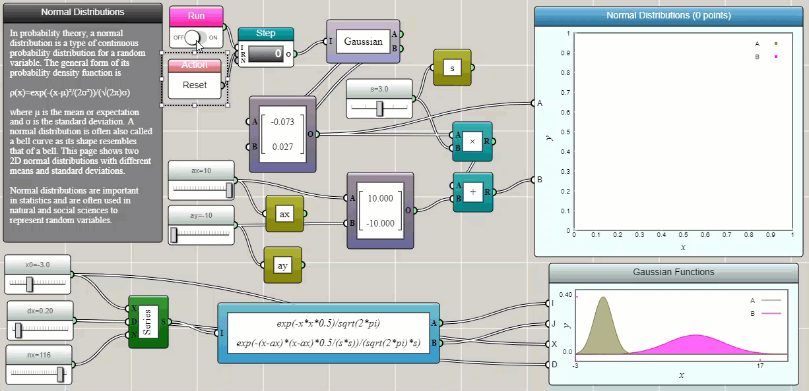
Click HERE to play with the 2D scatter plot example
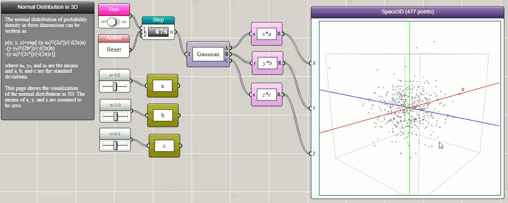
Click HERE to play with the 3D scatter plot example
Bubble Plot
A bubble plot is similar to a scatter plot, except that it allows a third dimension of data to be presented by the size of symbol. The following is an example showing the relationship between the GDP per capita and the life expectancy, but with the size of symbol representing each country's population.
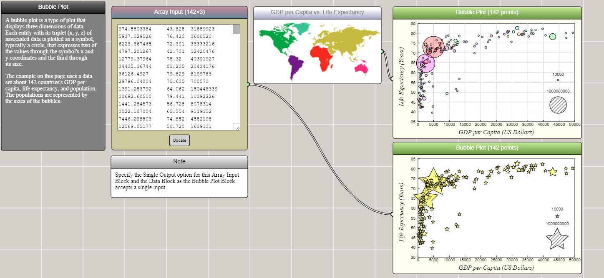
Click HERE to play with the bubble plot example
Box Plot
A box plot shows the quartiles of an array of numeric data. Typically, 0% (minimum), 25%, 50% (median), 75%, and 100% (maximum) are represented in a box-and-whisker diagram. Let's copy the temperature data of Boston and Miami into two array input blocks and show their variations using a box plot. As you can see, the box plot shows that the low, high, and average temperatures in Boston have a larger range of fluctuations than those in Miami.
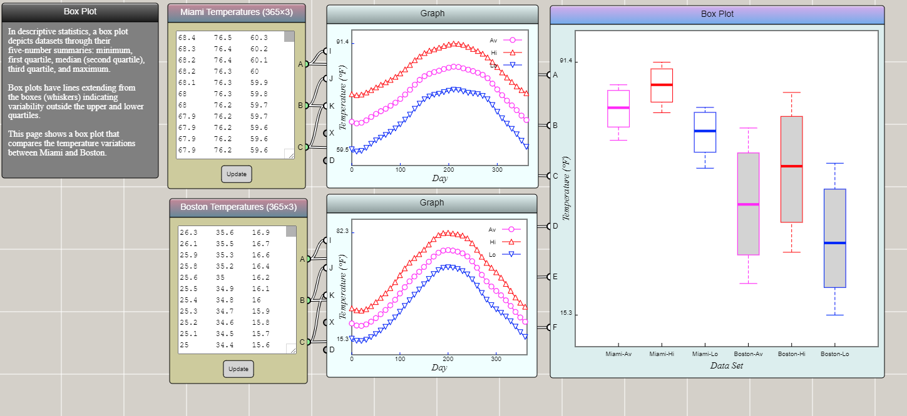
Click HERE to play with the box plot example
Area Plot
An area plot differs from a line plot in that it fills the area between a line and a reference line (usually an axis) with a color, gradient, or texture.
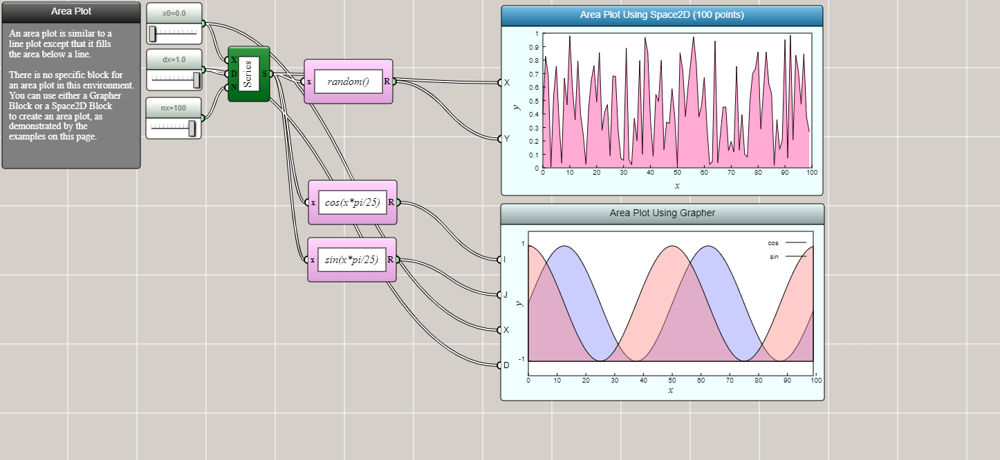
Click HERE to play with the area plot example
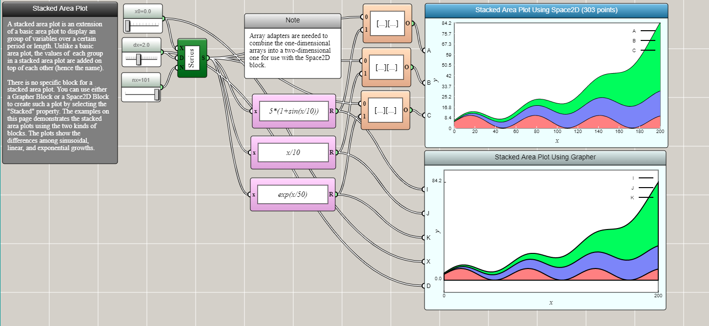
Click HERE to play with the stacked area plot example
Histogram
A histogram shows the data distribution in a series of bins, usually formed by evenly dividing a range of values into many intervals. A histogram can be regarded as a discretized approximation of a line plot.
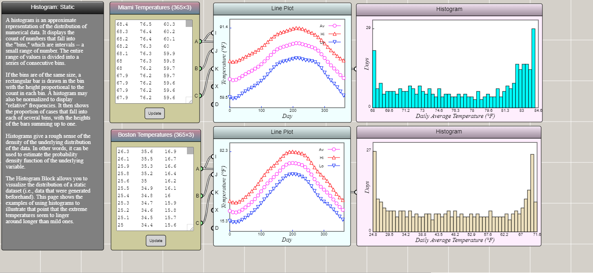
Click HERE to play with the static histogram example
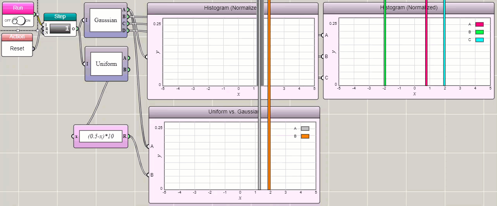
Click HERE to play with the dynamic histogram example
Pie Chart
A pie chart divides a circle into slices to illustrate numerical proportions of a data set.
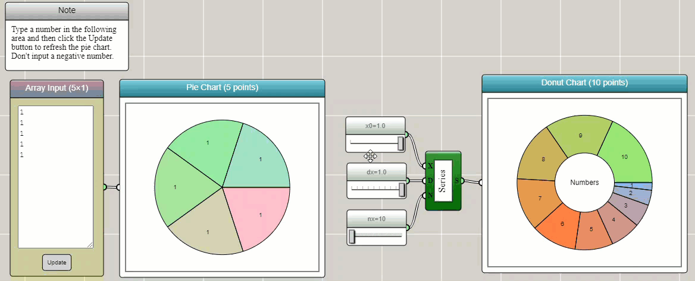
Click HERE to play with the pie chart example
Radar Chart
A radar chart shows the distribution of a high-dimensional data set related to a property.
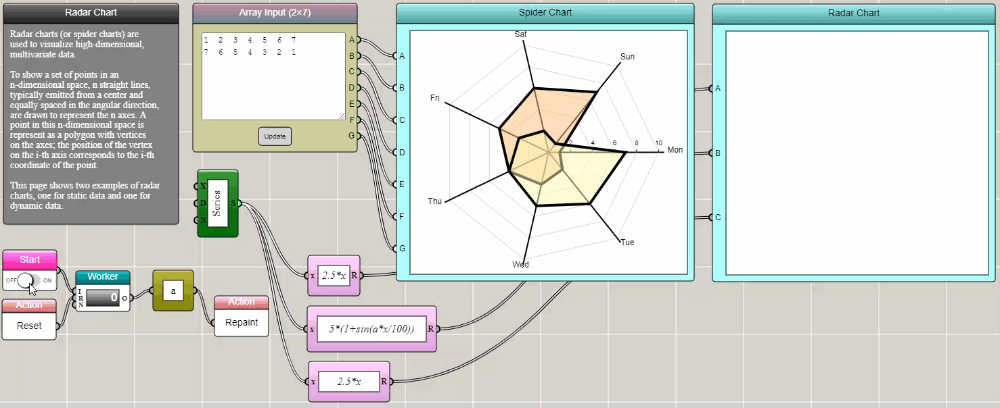
Click HERE to play with the radar chart example
Parallel Coordinates Plot
Like a radar chart, a parallel coordinates plot is a way to show the distribution of a high-dimensional data set related to a property.
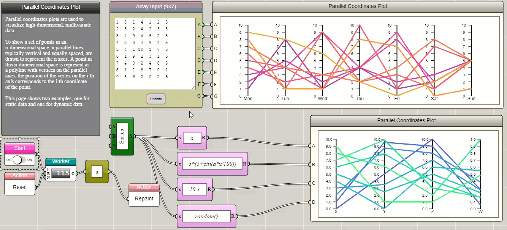
Click HERE to play with the parallel coordinates plot example
Heat Map
A heat map shows the two-dimensional distribution of a data set related to a property.
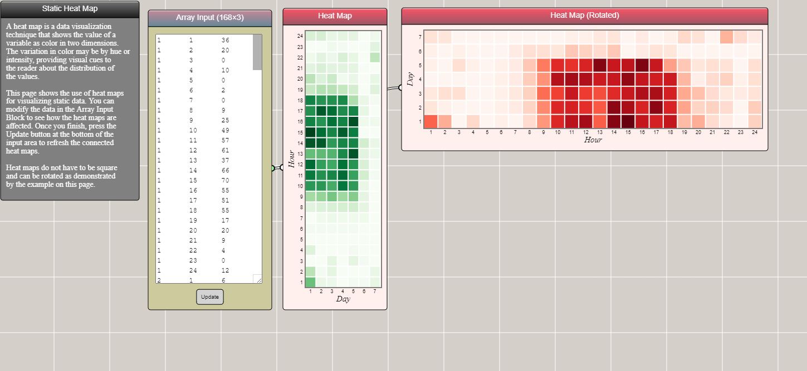
Click HERE to play with the static heat map example
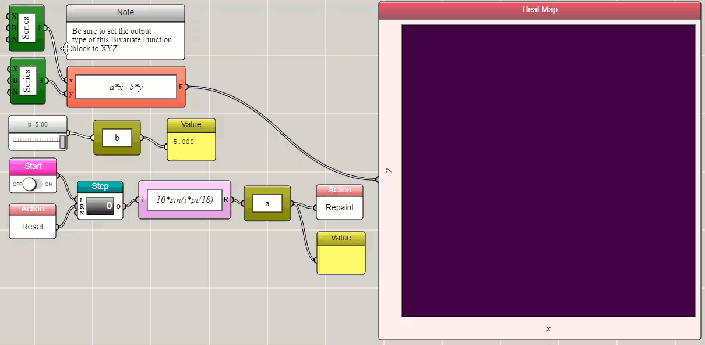
Click HERE to play with the dynamic heat map example
Word Cloud
A word cloud shows the occurrence frequencies of words in textual data.
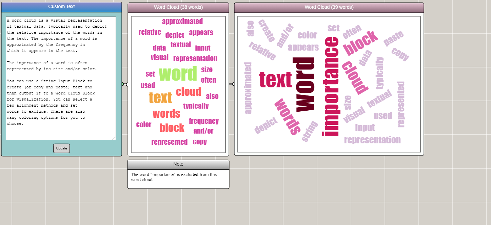
Click HERE to play with the word cloud example
Contour Plot
A contour plot of two variables shows curves along which a function of the variables has the same values.
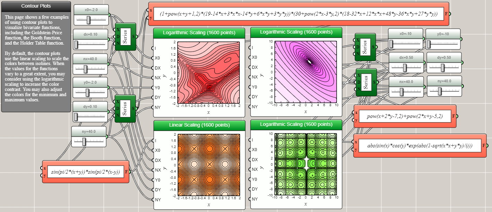
Click HERE to play with the contour plot example
Surface Plot
Similar to a contour plot, a surface plot also shows a function of two variables. Unlike a contour plot, a surface plot shows the data as a continuous 3D surface.
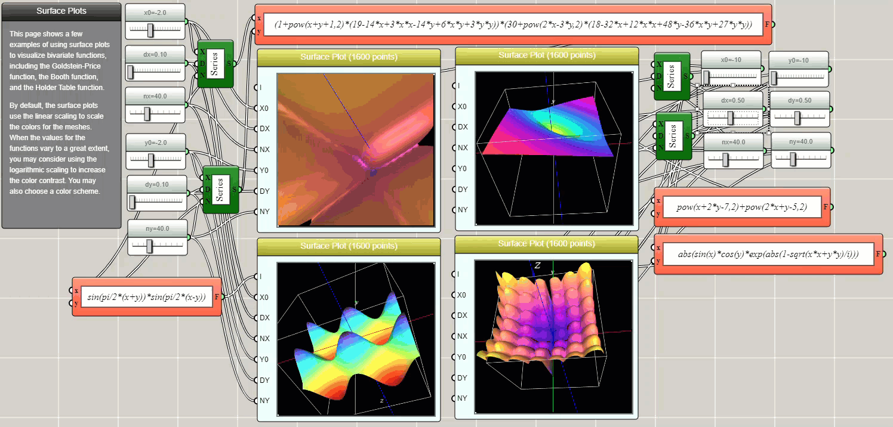
Click HERE to play with the surface plot example